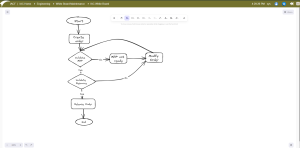
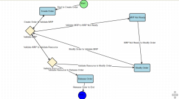

Revolutionizing Manufacturing IT with IACF's AI-Generated Workflow Capability
2024-05-22
In the rapidly evolving landscape of Manufacturing IT, staying ahead of the curve is imperative. Leveraging advanced technologies like Artificial Intelligence (AI) has become a critical component of achieving this goal. The Intelligent Applications Collaboration Framework (IACF) has already set a benchmark by transforming the way UI screens are created through AI. But the capabilities of IACF extend far beyond just UI generation. Today, we are thrilled to introduce IACF’s groundbreaking new feature: AI-powered workflow generation.
From Mockup to Reality: The IACF Whiteboard Experience
At the heart of IACF’s latest innovation lies the IAC whiteboard, a dynamic tool that allows users to seamlessly transition from conceptualizing workflows to realizing them through AI. This interactive whiteboard is designed to be intuitive and user-friendly, enabling stakeholders to articulate their requirements in a visual and straightforward manner.Mocking Up the Workflow
Using the IAC whiteboard, users can sketch out the entire workflow, encompassing various stages of order creation, validation, approval processes, and more. This visual representation of business logic provides a clear and comprehensive blueprint, ensuring that all stakeholders have a unified understanding of the processes involved.
IAC whiteboardAI-Driven Workflow Generation
Once the workflow mockup is complete, IACF’s AI capabilities come into play. The AI engine analyzes the mockup, understanding the intricacies of the business logic, and translates it into a fully functional workflow within the IACF framework. This transformation from mockup to real AI-generated workflow is not just efficient but also remarkably accurate, ensuring that the final output aligns perfectly with the initial conceptualization.
#AI generated Order creation flowReal-World Applications
The applications of IACF’s AI-generated workflow capabilities are vast and varied, catering to multiple facets of manufacturing operations. Here are a few examples of how this technology can be employed:- Order Creation and Management: Streamline the process of order creation by automating the steps involved, from initial request to final production. The AI-generated workflow ensures that each stage is meticulously managed, reducing errors and enhancing efficiency.
- Approval Processes: Implement robust approval workflows for requests and data validation. The AI system can be configured to follow specific rules and criteria, ensuring that approvals are granted systematically and transparently.
- Non-Conformance Reporting (NCR): Manage NCR processes more effectively by automating the workflow for reporting, reviewing, and resolving non-conformance issues. This helps in maintaining high standards of quality control and compliance.
- Data Management: Automate the workflow for data handling, ensuring that data is collected, processed, and stored in a consistent and organized manner. This is particularly beneficial for maintaining accurate records and facilitating data-driven decision-making.